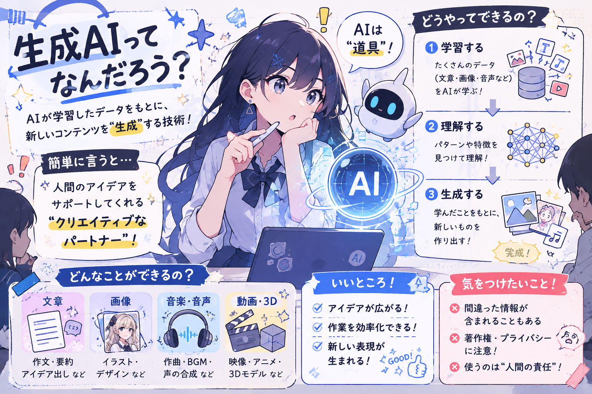

作品

蒼海の残響
本作品は、オリジナルキャラクターのデザインをもとに、近未来の廃墟都市を舞台とした大規模な戦闘シーンをAI生成した3Dゲーム風キービジュアルです。主人公の黒を基調とした戦闘服や白いファーカラー、シアン色の発光ライン、「06」のマーキングなどの特徴を維持しながら、巨大な敵モンスターと対峙するダイナミックな構図を構成しました。 主人公から敵へ流れるシアン色の「電子の海」を中心に、エネルギー、デジタルパーティクル、光のエフェクトを組み合わせ、攻撃の方向性と画面全体のスケール感を表現しています。また、背景には複数の仲間キャラクターと敵を配置し、個々のシルエットや武器を変えることで、大規模なチーム戦闘と世界観の広がりを演出しました。 低アングルのカメラ、強い遠近感、光と煙による大気表現を取り入れ、AAAタイトルのゲームプロモーション映像を意識した、迫力のあるシネマティックなビジュアルを目指しました。 。
使ったプロンプト
Create a 4K UHD, 16:9 cinematic AAA Japanese game key visual, realistic stylized 3D, highly detailed and polished. Main Character: A youthful, handsome, elegant male with refined slightly androgynous but clearly masculine features, narrow jaw, smooth skin, sharp cyan-blue eyes, defined brows, refined nose and lips. Calm, intimidating expression with focused eyes and a subtle confident smirk. Medium-length messy black hair with bright cyan/teal streaks. Preserve the full costume design: black high-tech tactical suit with segmented armor, glowing cyan circuit lines, heavy black cloak with thick white-gray fur collar and shoulder accents, distinctive white geometric logo on the back, black fingerless gloves, black combat pants with vertical cyan glowing stripes and “06” marking on the thigh, black tactical boots with cyan details. Elegant athletic proportions, not overly muscular. Weapons & Action: Dual futuristic black swords with long curved cyan energy blades. The character is in the lower-left foreground, dynamically drawing one sword and facing a gigantic hostile monster in the center-right. His body, face and gaze must clearly target the enemy, never the camera. Powerful, dominant, heroic combat pose with strong momentum. Electronic Ocean: Massive luminous cyan-blue waves combining real water and digital technology, with liquid electricity, holographic particles, data streams, circuit patterns, digital fragments and energy cascades. The energy originates from the sword and forms a dramatic diagonal attack line toward the monster. Battlefield: Vast ruined futuristic city with collapsed skyscrapers, broken roads, debris, abandoned technology, sparks, smoke and dust. Team Battle: Several distant allied characters actively fighting other monsters. Each has a unique silhouette, hairstyle, costume, color scheme and weapon, including rifles, spears, greatswords, dual blades, staffs, bows and energy weapons. Use varied dark, white, red, green and metallic designs. Enemies: Completely hostile alien, mutated or biomechanical monsters with a visual language fundamentally different from humans. The main monster is dramatically larger than the protagonist. Composition & Quality: Low-angle cinematic camera, dramatic perspective and foreshortening, strong diagonal composition, deep depth of field, atmospheric perspective, volumetric lighting, global illumination, cinematic shadows, realistic PBR materials, spectacular VFX and subtle motion blur. Visual flow: protagonist → sword/electronic ocean → giant monster → allied fighters → ruined city. Avoid: facing camera, looking away from enemy, static posing, friendly monsters, identical allies, uniform colors, overly muscular/rugged face, beard, childish or overly feminine features, chibi proportions, generic designs, distorted anatomy, low detail.